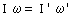

Cambio en la rotación de un cuerpo aislado Un cuerpo girando tiene un momento angular I·ω, si su momento de inercia cambia (Porque cambia la distribución de masa) tendrá que cambiar la velocidad angular para que se conserve el momento angular, cumpliéndose:  Cuando la velocidad angular sea dato habrá que anteponerle signo. La velocidad angular que sea incógnita se obtendrá con su signo |